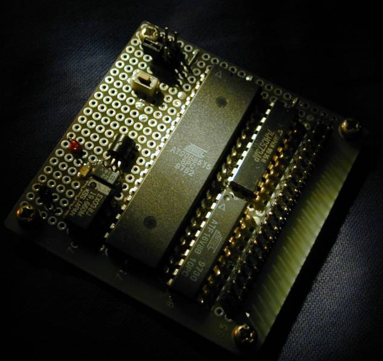
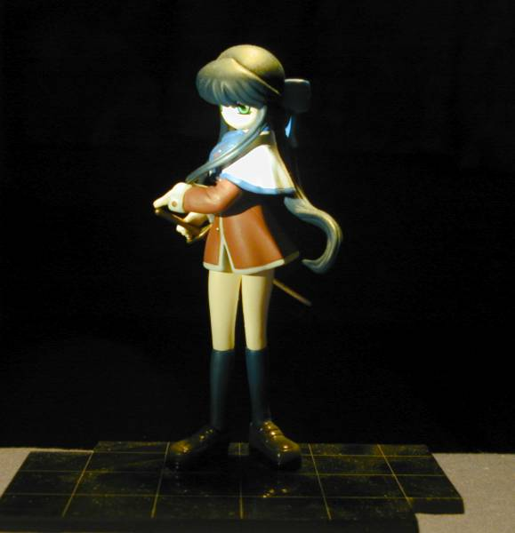

{kind=link}
{kind=link}

2003. 2. 26
一般の写真撮影の話ではありません。かといって、X線写真とか特殊な撮影というわけでもないです。特に工作サイトに載せるような小物の撮影のコツを簡単に紹介しておきましょう。だから、基本は一般の写真撮影と同じです。
現在のカメラはデジタル全盛で、デジタルカメラの販売台数は既に何年か前に銀塩カメラを抜いているそうです。特にweb制作用ならデジカメ以外を選ぶ理由はありません。デジカメには解像度の違いでグレードがありますが、webページに貼り付けるのが目的なら、経験から言って100万画素あれば十分です。
右に示す写真は、現在私が使っている Nikonの Coolpix950 (200万画素)。レンズ前2cmまで接写できるので、細部の撮影に適しています。こういった撮像部が回転するタイプのデジカメは、従来のカメラと違って自由な姿勢で構えられる利点があります。腰で構えてしっかりホールド、頭上で構えて人垣越え...。
写真の基本ですが、写り具合の良し悪しのほとんどは、照明の良し悪しにかかっています。特にデジカメは銀塩に比べて感度が低いことが弱点なので、十分な照明を確保することが重要といえます。
マクロ撮影に内蔵フラッシュを使うとどうしてもハレーションが出たり陰影がきつくなったりして自然な感じに撮れません。でも、補助光源無しの室内照明だけではシャッター速度が落ちるので、カメラを完全に固定しないと手ブレしてしまいます。そこで、何らかの方法で被写体を明るく照らす必要があります。
とにかく明るく...これに尽きます。明るいほど良いです。明るければそれだけ高速シャッターを切れることになり、手で構えてもブレる心配が無くなり作業効率が上がります。さらに撮像素子のノイズも相対的に下がるので、S/Nの良いクリアな画像になります。でも単に明るくするだけではダメで、演色性の良い光源で被写体を均等に照らし、余計な陰影を消してやらないと細部まで見やすい写真にはなりません。この目的で使われるのがリング光源で、プロダクション用から工業用まで広く使われています。構造は簡単なので、手軽に自作することもできます。右の写真に私が使っている撮影台を示します。32Wの高演色蛍光ランプ(昼白色)を適当な台(ジャンク箱)に取り付けただけです（インバータとランプとクランプで\3000位だったか）。こんなのでも通常の撮影には十分に使えますね。数cm以下の接写ではバックライト用のU型蛍光ランプを使っています。
で、実は写真の背景の青は下敷きにしたファイルの青だったのです。写真の背景色もwebページの配色の一部として考えると、イイ感じのページになると思いますよ。
普通の蛍光灯スタンドでも十分に近づければ多少影が出るものの、小さな基板ならなかなか良い具合に撮れます。もっと手軽にやりたいというなら、表に出て撮影すれば良いのです。開けた屋外の曇天光はリング光源より理想的な照明といえます。表に出ないでも、南向きの窓際で結構十分なものです。
例えば古いデータシートの電子化といった大雑把なスキャンなら、場所を取るフラットベッドスキャナなんぞ買わんでも、デジカメで十分です。200万画素クラスでもB5の1ページが細かい文字が読める程度で取り込めます。光沢のない書類を取り込む場合は内蔵フラッシュが有効なので、場所を問いません。デジカメはいくら撮ってもフィルム代はかからないので、用途を限らずじゃんじゃん使いましょう(^^)。
リング光源で陰影を消すのが良いかどうかは制作の意図によって変わってきます。基板の撮影ならリング光源が最適ですけど、たとえばガレキの撮影にリング光源では...。あまり凝った撮影テクニックはこのページの目的の範囲外なので、簡単な例を示すにとどめておきます。ライティングテクニックは明るくするだけが全てではないってことで。
|
 基板をスポット光源で撮影してみたもの。何かのオーディオセットのカタログに出てきそうな写真である。 |
 Kanonの剣娘で、同様にスポット光源で撮影。例の初遭遇シーンの妖しい雰囲気がよく出ているかな。 |